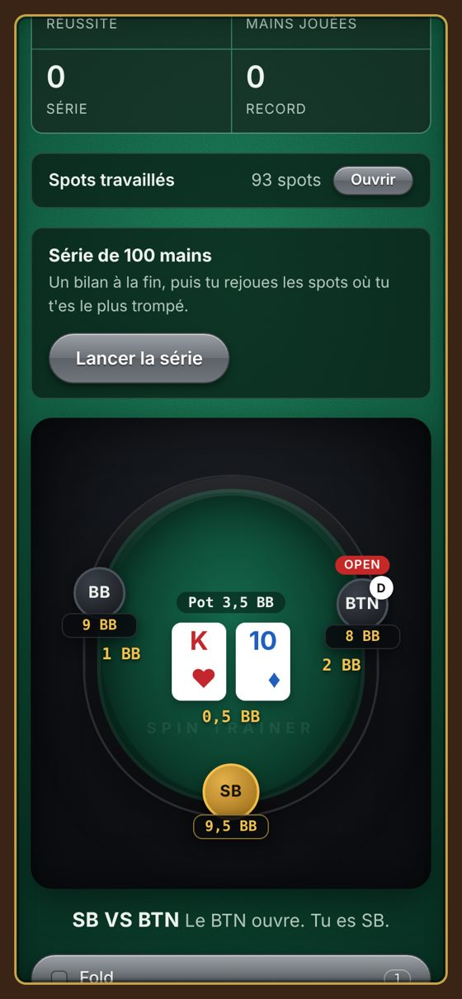
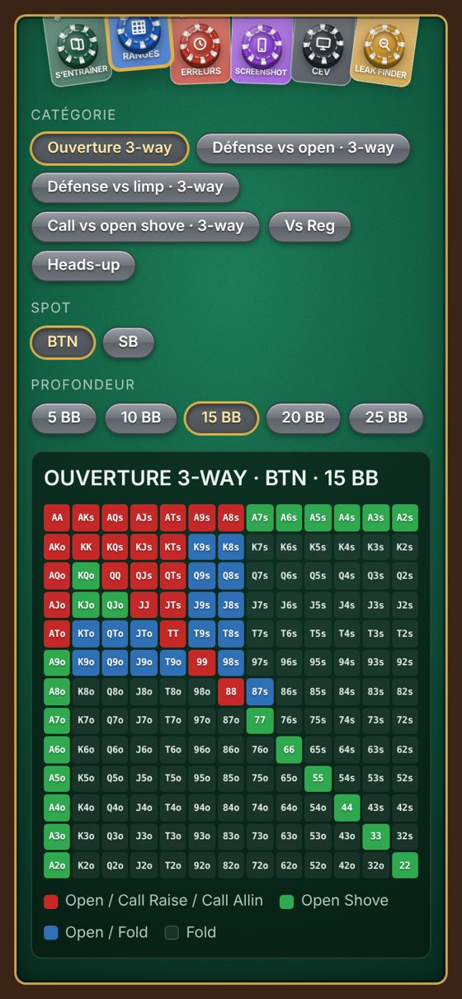
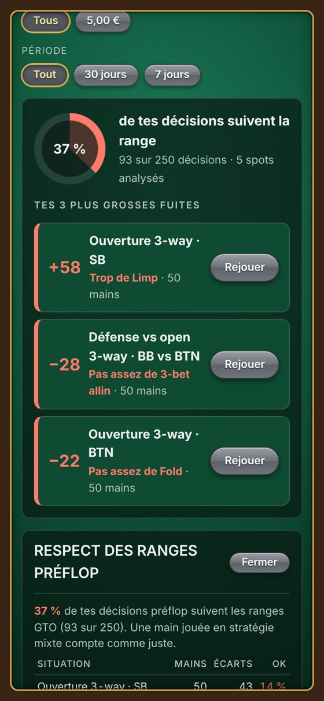

ENTRAÎNEUR DE RANGES · SPINS 3-MAX
Entraîne-toi main par main sur 93 spots préflop, puis rejoue tes vraies mains à partir de tes captures d'écran et de tes historiques. L'appli te montre où tu perds des jetons.
Android · téléphone et tablette · fonctionne hors ligne · français et anglais

1 · S'ENTRAÎNER
Ouverture, défense contre un open ou un limp, call d'un shove, heads-up : l'appli te donne une main à la table et tu choisis l'action. Elle te corrige avec la range et t'explique pourquoi.


2 · LEAK FINDER ET CEV
Importe tes historiques de mains : l'appli compare chacune de tes décisions préflop à la range et te montre où tu t'écartes le plus. « Trop de limp en SB », « pas assez de fold au BTN »… et un bouton pour rejouer ces mains-là.
3 · SCREENSHOTS
Après ta session, choisis tes captures d'écran Winamax. L'appli lit tes cartes, les tapis, les mises et ta position, en portrait comme en paysage, puis te fait rejouer chaque main sur la table d'entraînement. Tout est analysé sur ton téléphone : rien n'est envoyé.
K♣ 8♥
Cartes
BTN
Position
25 BB
Tapis
Lu automatiquement sur une capture
Débutant, Récréatif ou Régulier : les actions sont expliquées avec les mots que tu utilises.
Pas de compte, pas de serveur : tes mains restent sur ton téléphone. Sauvegarde dans un fichier quand tu veux.
En portrait ou en paysage, en français ou en anglais.
Les testeurs ont accès à toute l'appli pendant la bêta fermée. Après le lancement, deux formules :
30 €
par an
soit 2,50 € par mois
5 €
par mois
résiliable à tout moment
7 jours gratuits pour essayer. Sans abonnement : 20 mains d'entraînement gratuites par jour. Paiement et résiliation dans Google Play.
Devenir testeurÀ utiliser après tes sessions.
Toute aide extérieure pendant une partie est interdite par les salles de poker. Poker Spin Trainer sert à réviser et à analyser, jamais à jouer.